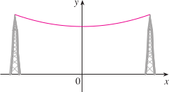

Funzioni iperboliche
Nelle applicazioni della matematica sono importanti certe combinazioni delle funzioni ex e e-x che ora definiamo:
Hyperbolic sine
Hyperbolic cosine
Hyperbolic tangent
Hyperbolic cotangent
La ragione per cui sono chiamate funzioni iperboliche è che
cosh2 t − sinh2 t = 1
quindi il punto (cosh t, sinht) è un punto dell'iperbola di equazione x2 − y2 = 1.
Note that sinh has domain ℝ and range ℝ, while cosh has domain ℝ and range [1, ∞]. From the definitions the following properties follow:
Sh (−x) = − Sh (x) (odd function);
Ch (−x) = Ch (−x) (even function);
Th (−x) = −Th (x) (odd function);
Sh(0) = 0, Ch(0) = 0, Th(0) = 0
Sh x ≤ ex/2 ≤ Ch x, ∀x ∈ ℝ
(Ch x)2 − (Sh x)2 = 1
Sh(x + y) = Sh x Ch y + Sh y Ch x
Ch(x + y) = Ch x Ch y + Sh y Sh x
Th(x + y) = (Th x + Th y)/(1 + Th x Th y)
Sh(2x) = 2 Sh x Ch x
Ch(2x) = (Ch x)2 + (Sh x)2
The reason for the names of these functions is that they are related to the hyperbola in much the same way that trigonometric functions are related to the circle; A point on the circle x2 + y2 = a2 may be expressed parametrically as x = a cos θ, y = a sin θ, whereas a point on one branch of the rectangular hyperbola x2 − y2 = a2 may be represented by x = a cosh φ, y = a sinh φ, satisfying the equation x2 − y2 = a2.
La funzione Ch x compare nella soluzione di un semplice problema fisico: trovare la sagoma lungo la quale si dispone un filo pesante, omogeneo, fissato per le due estremità. In queste ipotesi il filo descriverà, in un piano verticale, il grafico della funzione f(x) = Ch x (a patto di scegliere opportunamente il sistema di riferimento e le unità di misura sui due assi). Per questo motivo la curva grafico di Ch x è anche detta catenaria.
It takes the shape of a curve with equation
called a catenary. (The Latin word catena means “chain.”). In which x0 represent the value for which the catenary has either a minimum or maximum, h is the value of the catenary at x0; The paramter a also characterizes the form of the catenary: for a > 0 it is a sagging chain, for a < 0 it is an arch. The actual value for a depends on the tension in the cable and the density of the cable.